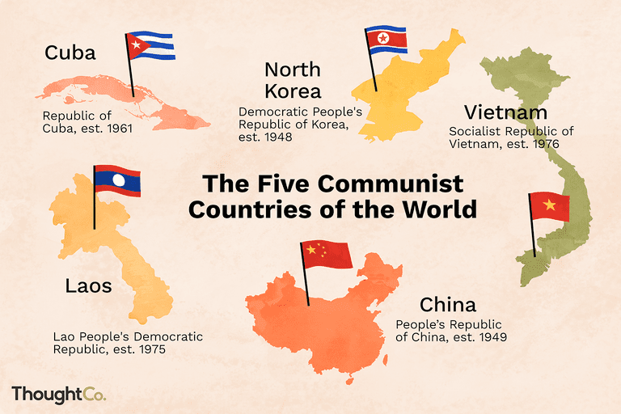
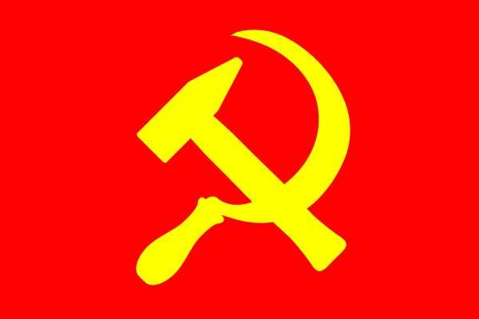

As, we currently live in a very capitalist society, many of us are somewhat unfamiliar with the idea of Communism. Since its start from more than a century ago, Communism, a political and economic ideology that calls for a classless, government-controlled society in which everything is shared equally, has seen a series of advancements and declines. There were many countries that were once communist, such as Russia, Ukraine, Mongolia, Azerbaijan, and many more. However, the 5 countries: China, Cuba, Vietnam, Laos and North Korea are still communist. A lot of people dislike communism, and often like to compare it with socialism and capitalism, since they are a lot more popular. But before you make your judgement, why don’t we dive deeper into the actuality of communism?
 Learn more about communist countriesDefinition: Communism is a theory or system of social organization in which all property is owned by the community and each person contributes and receives according to their ability and needs.
Source of the definitionHow it all started: Communism was an economic-political philosophy founded by Karl Marx and Friedrich Engels in the second half of the 19th century. Marx and Engels met in 1844, and discovered that they had similar principles. In 1848 they wrote and published "The Communist Manifesto." They desired to end capitalism feeling that it was the social class system that led to the exploitation of workers, and therefore started their own political system.
